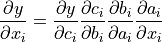

Introduction to PyTorch¶
Author: Phillip Lippe
License: CC BY-SA
Generated: 2021-08-31T16:57:55.048454
This tutorial will give a short introduction to PyTorch basics, and get you setup for writing your own neural networks. This notebook is part of a lecture series on Deep Learning at the University of Amsterdam. The full list of tutorials can be found at https://uvadlc-notebooks.rtfd.io.
Open in ![Open In Colab]()
Give us a ⭐ on Github | Check out the documentation | Join us on Slack
Setup¶
This notebook requires some packages besides pytorch-lightning.
[1]:
! pip install --quiet "pytorch-lightning>=1.3" "torch>=1.6, <1.9" "torchmetrics>=0.3" "matplotlib"
Welcome to our PyTorch tutorial for the Deep Learning course 2020 at the University of Amsterdam! The following notebook is meant to give a short introduction to PyTorch basics, and get you setup for writing your own neural networks. PyTorch is an open source machine learning framework that allows you to write your own neural networks and optimize them efficiently. However, PyTorch is not the only framework of its kind. Alternatives to PyTorch include TensorFlow, JAX and Caffe. We choose to teach PyTorch at the University of Amsterdam because it is well established, has a huge developer community (originally developed by Facebook), is very flexible and especially used in research. Many current papers publish their code in PyTorch, and thus it is good to be familiar with PyTorch as well. Meanwhile, TensorFlow (developed by Google) is usually known for being a production-grade deep learning library. Still, if you know one machine learning framework in depth, it is very easy to learn another one because many of them use the same concepts and ideas. For instance, TensorFlow’s version 2 was heavily inspired by the most popular features of PyTorch, making the frameworks even more similar. If you are already familiar with PyTorch and have created your own neural network projects, feel free to just skim this notebook.
We are of course not the first ones to create a PyTorch tutorial. There are many great tutorials online, including the “60-min blitz” on the official PyTorch website. Yet, we choose to create our own tutorial which is designed to give you the basics particularly necessary for the practicals, but still understand how PyTorch works under the hood. Over the next few weeks, we will also keep exploring new PyTorch features in the series of Jupyter notebook tutorials about deep learning.
We will use a set of standard libraries that are often used in machine learning projects. If you are running this notebook on Google Colab, all libraries should be pre-installed. If you are running this notebook locally, make sure you have installed our dl2020 environment (link) and have activated it.
[2]:
import time
import matplotlib.pyplot as plt
import numpy as np
import torch
import torch.nn as nn
import torch.utils.data as data
%matplotlib inline
from IPython.display import set_matplotlib_formats
from matplotlib.colors import to_rgba
from tqdm.notebook import tqdm # Progress bar
set_matplotlib_formats("svg", "pdf")
/tmp/ipykernel_452/4100430984.py:14: DeprecationWarning: `set_matplotlib_formats` is deprecated since IPython 7.23, directly use `matplotlib_inline.backend_inline.set_matplotlib_formats()`
set_matplotlib_formats("svg", "pdf")
The Basics of PyTorch¶
We will start with reviewing the very basic concepts of PyTorch. As a prerequisite, we recommend to be familiar with the numpy package as most machine learning frameworks are based on very similar concepts. If you are not familiar with numpy yet, don’t worry: here is a tutorial to go through.
So, let’s start with importing PyTorch. The package is called torch, based on its original framework Torch. As a first step, we can check its version:
[3]:
print("Using torch", torch.__version__)
Using torch 1.8.1+cu102
At the time of writing this tutorial (mid of August 2021), the current stable version is 1.9. You should therefore see the output Using torch 1.9.0, eventually with some extension for the CUDA version on Colab. In case you use the dl2020 environment, you should see Using torch 1.6.0 since the environment was provided in October 2020. It is recommended to update the PyTorch version to the newest one. If you see a lower version number than 1.6, make sure you have installed the correct
the environment, or ask one of your TAs. In case PyTorch 1.10 or newer will be published during the time of the course, don’t worry. The interface between PyTorch versions doesn’t change too much, and hence all code should also be runnable with newer versions.
As in every machine learning framework, PyTorch provides functions that are stochastic like generating random numbers. However, a very good practice is to setup your code to be reproducible with the exact same random numbers. This is why we set a seed below.
[4]:
torch.manual_seed(42) # Setting the seed
[4]:
<torch._C.Generator at 0x7f62a62993d0>
Tensors¶
Tensors are the PyTorch equivalent to Numpy arrays, with the addition to also have support for GPU acceleration (more on that later). The name “tensor” is a generalization of concepts you already know. For instance, a vector is a 1-D tensor, and a matrix a 2-D tensor. When working with neural networks, we will use tensors of various shapes and number of dimensions.
Most common functions you know from numpy can be used on tensors as well. Actually, since numpy arrays are so similar to tensors, we can convert most tensors to numpy arrays (and back) but we don’t need it too often.
Initialization¶
Let’s first start by looking at different ways of creating a tensor. There are many possible options, the most simple one is to call torch.Tensor passing the desired shape as input argument:
[5]:
x = torch.Tensor(2, 3, 4)
print(x)
tensor([[[ 8.2492e+19, 1.5113e-14, -7.6981e+16, 4.5696e-41],
[-3.4843e+14, 4.5696e-41, 7.3241e+08, 5.8092e+34],
[-7.8935e+16, 4.5696e-41, -3.5509e+14, 4.5696e-41]],
[[-3.6622e-36, 3.6169e+21, -7.8731e+16, 4.5696e-41],
[-3.5491e+14, 4.5696e-41, -1.6437e+08, -6.7645e+07],
[-7.8853e+16, 4.5696e-41, -3.5491e+14, 4.5696e-41]]])
The function torch.Tensor allocates memory for the desired tensor, but reuses any values that have already been in the memory. To directly assign values to the tensor during initialization, there are many alternatives including:
torch.zeros: Creates a tensor filled with zerostorch.ones: Creates a tensor filled with onestorch.rand: Creates a tensor with random values uniformly sampled between 0 and 1torch.randn: Creates a tensor with random values sampled from a normal distribution with mean 0 and variance 1torch.arange: Creates a tensor containing the values
torch.Tensor(input list): Creates a tensor from the list elements you provide
[6]:
# Create a tensor from a (nested) list
x = torch.Tensor([[1, 2], [3, 4]])
print(x)
tensor([[1., 2.],
[3., 4.]])
[7]:
# Create a tensor with random values between 0 and 1 with the shape [2, 3, 4]
x = torch.rand(2, 3, 4)
print(x)
tensor([[[0.8823, 0.9150, 0.3829, 0.9593],
[0.3904, 0.6009, 0.2566, 0.7936],
[0.9408, 0.1332, 0.9346, 0.5936]],
[[0.8694, 0.5677, 0.7411, 0.4294],
[0.8854, 0.5739, 0.2666, 0.6274],
[0.2696, 0.4414, 0.2969, 0.8317]]])
You can obtain the shape of a tensor in the same way as in numpy (x.shape), or using the .size method:
[8]:
shape = x.shape
print("Shape:", x.shape)
size = x.size()
print("Size:", size)
dim1, dim2, dim3 = x.size()
print("Size:", dim1, dim2, dim3)
Shape: torch.Size([2, 3, 4])
Size: torch.Size([2, 3, 4])
Size: 2 3 4
Tensor to Numpy, and Numpy to Tensor¶
Tensors can be converted to numpy arrays, and numpy arrays back to tensors. To transform a numpy array into a tensor, we can use the function torch.from_numpy:
[9]:
np_arr = np.array([[1, 2], [3, 4]])
tensor = torch.from_numpy(np_arr)
print("Numpy array:", np_arr)
print("PyTorch tensor:", tensor)
Numpy array: [[1 2]
[3 4]]
PyTorch tensor: tensor([[1, 2],
[3, 4]])
To transform a PyTorch tensor back to a numpy array, we can use the function .numpy() on tensors:
[10]:
tensor = torch.arange(4)
np_arr = tensor.numpy()
print("PyTorch tensor:", tensor)
print("Numpy array:", np_arr)
PyTorch tensor: tensor([0, 1, 2, 3])
Numpy array: [0 1 2 3]
The conversion of tensors to numpy require the tensor to be on the CPU, and not the GPU (more on GPU support in a later section). In case you have a tensor on GPU, you need to call .cpu() on the tensor beforehand. Hence, you get a line like np_arr = tensor.cpu().numpy().
Operations¶
Most operations that exist in numpy, also exist in PyTorch. A full list of operations can be found in the PyTorch documentation, but we will review the most important ones here.
The simplest operation is to add two tensors:
[11]:
x1 = torch.rand(2, 3)
x2 = torch.rand(2, 3)
y = x1 + x2
print("X1", x1)
print("X2", x2)
print("Y", y)
X1 tensor([[0.1053, 0.2695, 0.3588],
[0.1994, 0.5472, 0.0062]])
X2 tensor([[0.9516, 0.0753, 0.8860],
[0.5832, 0.3376, 0.8090]])
Y tensor([[1.0569, 0.3448, 1.2448],
[0.7826, 0.8848, 0.8151]])
Calling x1 + x2 creates a new tensor containing the sum of the two inputs. However, we can also use in-place operations that are applied directly on the memory of a tensor. We therefore change the values of x2 without the chance to re-accessing the values of x2 before the operation. An example is shown below:
[12]:
x1 = torch.rand(2, 3)
x2 = torch.rand(2, 3)
print("X1 (before)", x1)
print("X2 (before)", x2)
x2.add_(x1)
print("X1 (after)", x1)
print("X2 (after)", x2)
X1 (before) tensor([[0.5779, 0.9040, 0.5547],
[0.3423, 0.6343, 0.3644]])
X2 (before) tensor([[0.7104, 0.9464, 0.7890],
[0.2814, 0.7886, 0.5895]])
X1 (after) tensor([[0.5779, 0.9040, 0.5547],
[0.3423, 0.6343, 0.3644]])
X2 (after) tensor([[1.2884, 1.8504, 1.3437],
[0.6237, 1.4230, 0.9539]])
In-place operations are usually marked with a underscore postfix (e.g. “add_” instead of “add”).
Another common operation aims at changing the shape of a tensor. A tensor of size (2,3) can be re-organized to any other shape with the same number of elements (e.g. a tensor of size (6), or (3,2), …). In PyTorch, this operation is called view:
[13]:
x = torch.arange(6)
print("X", x)
X tensor([0, 1, 2, 3, 4, 5])
[14]:
x = x.view(2, 3)
print("X", x)
X tensor([[0, 1, 2],
[3, 4, 5]])
[15]:
x = x.permute(1, 0) # Swapping dimension 0 and 1
print("X", x)
X tensor([[0, 3],
[1, 4],
[2, 5]])
Other commonly used operations include matrix multiplications, which are essential for neural networks. Quite often, we have an input vector  , which is transformed using a learned weight matrix
, which is transformed using a learned weight matrix  . There are multiple ways and functions to perform matrix multiplication, some of which we list below:
. There are multiple ways and functions to perform matrix multiplication, some of which we list below:
torch.matmul: Performs the matrix product over two tensors, where the specific behavior depends on the dimensions. If both inputs are matrices (2-dimensional tensors), it performs the standard matrix product. For higher dimensional inputs, the function supports broadcasting (for details see the documentation). Can also be written asa @ b, similar to numpy.torch.mm: Performs the matrix product over two matrices, but doesn’t support broadcasting (see documentation)torch.bmm: Performs the matrix product with a support batch dimension. If the first tensor is of shape (
is of shape ( ), and the second tensor
), and the second tensor  (), the output is of shape (), and has been calculated by performing
(), the output is of shape (), and has been calculated by performing  matrix multiplications of the submatrices of and :
matrix multiplications of the submatrices of and : 
torch.einsum: Performs matrix multiplications and more (i.e. sums of products) using the Einstein summation convention. Explanation of the Einstein sum can be found in assignment 1.
Usually, we use torch.matmul or torch.bmm. We can try a matrix multiplication with torch.matmul below.
[16]:
x = torch.arange(6)
x = x.view(2, 3)
print("X", x)
X tensor([[0, 1, 2],
[3, 4, 5]])
[17]:
W = torch.arange(9).view(3, 3) # We can also stack multiple operations in a single line
print("W", W)
W tensor([[0, 1, 2],
[3, 4, 5],
[6, 7, 8]])
[18]:
h = torch.matmul(x, W) # Verify the result by calculating it by hand too!
print("h", h)
h tensor([[15, 18, 21],
[42, 54, 66]])
Indexing¶
We often have the situation where we need to select a part of a tensor. Indexing works just like in numpy, so let’s try it:
[19]:
x = torch.arange(12).view(3, 4)
print("X", x)
X tensor([[ 0, 1, 2, 3],
[ 4, 5, 6, 7],
[ 8, 9, 10, 11]])
[20]:
print(x[:, 1]) # Second column
tensor([1, 5, 9])
[21]:
print(x[0]) # First row
tensor([0, 1, 2, 3])
[22]:
print(x[:2, -1]) # First two rows, last column
tensor([3, 7])
[23]:
print(x[1:3, :]) # Middle two rows
tensor([[ 4, 5, 6, 7],
[ 8, 9, 10, 11]])
Dynamic Computation Graph and Backpropagation¶
One of the main reasons for using PyTorch in Deep Learning projects is that we can automatically get gradients/derivatives of functions that we define. We will mainly use PyTorch for implementing neural networks, and they are just fancy functions. If we use weight matrices in our function that we want to learn, then those are called the parameters or simply the weights.
If our neural network would output a single scalar value, we would talk about taking the derivative, but you will see that quite often we will have multiple output variables (“values”); in that case we talk about gradients. It’s a more general term.
Given an input , we define our function by manipulating that input, usually by matrix-multiplications with weight matrices and additions with so-called bias vectors. As we manipulate our input, we are automatically creating a computational graph. This graph shows how to arrive at our output from our input. PyTorch is a define-by-run framework; this means that we can just do our manipulations, and PyTorch will keep track of that graph for us. Thus, we create a
dynamic computation graph along the way.
So, to recap: the only thing we have to do is to compute the output, and then we can ask PyTorch to automatically get the gradients.
Note: Why do we want gradients? Consider that we have defined a function, a neural net, that is supposed to compute a certain output
for an input vector
The first thing we have to do is to specify which tensors require gradients. By default, when we create a tensor, it does not require gradients.
[24]:
x = torch.ones((3,))
print(x.requires_grad)
False
We can change this for an existing tensor using the function requires_grad_() (underscore indicating that this is a in-place operation). Alternatively, when creating a tensor, you can pass the argument requires_grad=True to most initializers we have seen above.
[25]:
x.requires_grad_(True)
print(x.requires_grad)
True
In order to get familiar with the concept of a computation graph, we will create one for the following function:
You could imagine that  are our parameters, and we want to optimize (either maximize or minimize) the output . For this, we want to obtain the gradients
are our parameters, and we want to optimize (either maximize or minimize) the output . For this, we want to obtain the gradients  . For our example, we’ll use as our input.
. For our example, we’ll use as our input.
[26]:
x = torch.arange(3, dtype=torch.float32, requires_grad=True) # Only float tensors can have gradients
print("X", x)
X tensor([0., 1., 2.], requires_grad=True)
Now let’s build the computation graph step by step. You can combine multiple operations in a single line, but we will separate them here to get a better understanding of how each operation is added to the computation graph.
[27]:
a = x + 2
b = a ** 2
c = b + 3
y = c.mean()
print("Y", y)
Y tensor(12.6667, grad_fn=<MeanBackward0>)
Using the statements above, we have created a computation graph that looks similar to the figure below:

We calculate  based on the inputs and the constant
based on the inputs and the constant  , is squared, and so on. The visualization is an abstraction of the dependencies between inputs and outputs of the operations we have applied. Each node of the computation graph has automatically defined a function for calculating the gradients with respect to its inputs,
, is squared, and so on. The visualization is an abstraction of the dependencies between inputs and outputs of the operations we have applied. Each node of the computation graph has automatically defined a function for calculating the gradients with respect to its inputs, grad_fn. You can see this when we printed the output tensor . This is why the computation graph is usually
visualized in the reverse direction (arrows point from the result to the inputs). We can perform backpropagation on the computation graph by calling the function backward() on the last output, which effectively calculates the gradients for each tensor that has the property requires_grad=True:
[28]:
y.backward()
x.grad will now contain the gradient  , and this gradient indicates how a change in will affect output given the current input :
, and this gradient indicates how a change in will affect output given the current input :
[29]:
print(x.grad)
tensor([1.3333, 2.0000, 2.6667])
We can also verify these gradients by hand. We will calculate the gradients using the chain rule, in the same way as PyTorch did it:

Note that we have simplified this equation to index notation, and by using the fact that all operation besides the mean do not combine the elements in the tensor. The partial derivatives are:

Hence, with the input being , our gradients are ![\partial y/\partial \mathbf{x}=[4/3,2,8/3]](../../_images/math/c6d036c6d4ab806821abaafc024497883652f80f.png) . The previous code cell should have printed the same result.
. The previous code cell should have printed the same result.
GPU support¶
A crucial feature of PyTorch is the support of GPUs, short for Graphics Processing Unit. A GPU can perform many thousands of small operations in parallel, making it very well suitable for performing large matrix operations in neural networks. When comparing GPUs to CPUs, we can list the following main differences (credit: Kevin Krewell, 2009)

CPUs and GPUs have both different advantages and disadvantages, which is why many computers contain both components and use them for different tasks. In case you are not familiar with GPUs, you can read up more details in this NVIDIA blog post or here.
GPUs can accelerate the training of your network up to a factor of which is essential for large neural networks. PyTorch implements a lot of functionality for supporting GPUs (mostly those of NVIDIA due to the libraries CUDA and cuDNN). First, let’s check whether you have a GPU available:
[30]:
gpu_avail = torch.cuda.is_available()
print(f"Is the GPU available? {gpu_avail}")
Is the GPU available? True
If you have a GPU on your computer but the command above returns False, make sure you have the correct CUDA-version installed. The dl2020 environment comes with the CUDA-toolkit 10.1, which is selected for the Lisa supercomputer. Please change it if necessary (CUDA 10.2 is currently common). On Google Colab, make sure that you have selected a GPU in your runtime setup (in the menu, check under Runtime -> Change runtime type).
By default, all tensors you create are stored on the CPU. We can push a tensor to the GPU by using the function .to(...), or .cuda(). However, it is often a good practice to define a device object in your code which points to the GPU if you have one, and otherwise to the CPU. Then, you can write your code with respect to this device object, and it allows you to run the same code on both a CPU-only system, and one with a GPU. Let’s try it below. We can specify the device as follows:
[31]:
device = torch.device("cuda") if torch.cuda.is_available() else torch.device("cpu")
print("Device", device)
Device cuda
Now let’s create a tensor and push it to the device:
[32]:
x = torch.zeros(2, 3)
x = x.to(device)
print("X", x)
X tensor([[0., 0., 0.],
[0., 0., 0.]], device='cuda:0')
In case you have a GPU, you should now see the attribute device='cuda:0' being printed next to your tensor. The zero next to cuda indicates that this is the zero-th GPU device on your computer. PyTorch also supports multi-GPU systems, but this you will only need once you have very big networks to train (if interested, see the PyTorch documentation). We can also compare the runtime of a large matrix multiplication on
the CPU with a operation on the GPU:
[33]:
x = torch.randn(5000, 5000)
# CPU version
start_time = time.time()
_ = torch.matmul(x, x)
end_time = time.time()
print(f"CPU time: {(end_time - start_time):6.5f}s")
# GPU version
x = x.to(device)
# The first operation on a CUDA device can be slow as it has to establish a CPU-GPU communication first.
# Hence, we run an arbitrary command first without timing it for a fair comparison.
if torch.cuda.is_available():
_ = torch.matmul(x * 0.0, x)
start_time = time.time()
_ = torch.matmul(x, x)
end_time = time.time()
print(f"GPU time: {(end_time - start_time):6.5f}s")
CPU time: 0.26331s
GPU time: 0.00011s
Depending on the size of the operation and the CPU/GPU in your system, the speedup of this operation can be >500x. As matmul operations are very common in neural networks, we can already see the great benefit of training a NN on a GPU. The time estimate can be relatively noisy here because we haven’t run it for multiple times. Feel free to extend this, but it also takes longer to run.
When generating random numbers, the seed between CPU and GPU is not synchronized. Hence, we need to set the seed on the GPU separately to ensure a reproducible code. Note that due to different GPU architectures, running the same code on different GPUs does not guarantee the same random numbers. Still, we don’t want that our code gives us a different output every time we run it on the exact same hardware. Hence, we also set the seed on the GPU:
[34]:
# GPU operations have a separate seed we also want to set
if torch.cuda.is_available():
torch.cuda.manual_seed(42)
torch.cuda.manual_seed_all(42)
# Additionally, some operations on a GPU are implemented stochastic for efficiency
# We want to ensure that all operations are deterministic on GPU (if used) for reproducibility
torch.backends.cudnn.determinstic = True
torch.backends.cudnn.benchmark = False
Learning by example: Continuous XOR¶
If we want to build a neural network in PyTorch, we could specify all our parameters (weight matrices, bias vectors) using Tensors (with requires_grad=True), ask PyTorch to calculate the gradients and then adjust the parameters. But things can quickly get cumbersome if we have a lot of parameters. In PyTorch, there is a package called torch.nn that makes building neural networks more convenient.
We will introduce the libraries and all additional parts you might need to train a neural network in PyTorch, using a simple example classifier on a simple yet well known example: XOR. Given two binary inputs  and
and  , the label to predict is
, the label to predict is  if either or is while the other is
if either or is while the other is  , or the label is in all other cases. The example became famous by the fact that a single neuron, i.e. a linear classifier, cannot learn
this simple function. Hence, we will learn how to build a small neural network that can learn this function. To make it a little bit more interesting, we move the XOR into continuous space and introduce some gaussian noise on the binary inputs. Our desired separation of an XOR dataset could look as follows:
, or the label is in all other cases. The example became famous by the fact that a single neuron, i.e. a linear classifier, cannot learn
this simple function. Hence, we will learn how to build a small neural network that can learn this function. To make it a little bit more interesting, we move the XOR into continuous space and introduce some gaussian noise on the binary inputs. Our desired separation of an XOR dataset could look as follows:

The model¶
The package torch.nn defines a series of useful classes like linear networks layers, activation functions, loss functions etc. A full list can be found here. In case you need a certain network layer, check the documentation of the package first before writing the layer yourself as the package likely contains the code for it already. We import it below:
[ ]:
[ ]:
Additionally to torch.nn, there is also torch.nn.functional. It contains functions that are used in network layers. This is in contrast to torch.nn which defines them as nn.Modules (more on it below), and torch.nn actually uses a lot of functionalities from torch.nn.functional. Hence, the functional package is useful in many situations, and so we import it as well here.
nn.Module¶
In PyTorch, a neural network is build up out of modules. Modules can contain other modules, and a neural network is considered to be a module itself as well. The basic template of a module is as follows:
[35]:
class MyModule(nn.Module):
def __init__(self):
super().__init__()
# Some init for my module
def forward(self, x):
# Function for performing the calculation of the module.
pass
The forward function is where the computation of the module is taken place, and is executed when you call the module (nn = MyModule(); nn(x)). In the init function, we usually create the parameters of the module, using nn.Parameter, or defining other modules that are used in the forward function. The backward calculation is done automatically, but could be overwritten as well if wanted.
Simple classifier¶
We can now make use of the pre-defined modules in the torch.nn package, and define our own small neural network. We will use a minimal network with a input layer, one hidden layer with tanh as activation function, and a output layer. In other words, our networks should look something like this:

The input neurons are shown in blue, which represent the coordinates and of a data point. The hidden neurons including a tanh activation are shown in white, and the output neuron in red. In PyTorch, we can define this as follows:
[36]:
class SimpleClassifier(nn.Module):
def __init__(self, num_inputs, num_hidden, num_outputs):
super().__init__()
# Initialize the modules we need to build the network
self.linear1 = nn.Linear(num_inputs, num_hidden)
self.act_fn = nn.Tanh()
self.linear2 = nn.Linear(num_hidden, num_outputs)
def forward(self, x):
# Perform the calculation of the model to determine the prediction
x = self.linear1(x)
x = self.act_fn(x)
x = self.linear2(x)
return x
For the examples in this notebook, we will use a tiny neural network with two input neurons and four hidden neurons. As we perform binary classification, we will use a single output neuron. Note that we do not apply a sigmoid on the output yet. This is because other functions, especially the loss, are more efficient and precise to calculate on the original outputs instead of the sigmoid output. We will discuss the detailed reason later.
[37]:
model = SimpleClassifier(num_inputs=2, num_hidden=4, num_outputs=1)
# Printing a module shows all its submodules
print(model)
SimpleClassifier(
(linear1): Linear(in_features=2, out_features=4, bias=True)
(act_fn): Tanh()
(linear2): Linear(in_features=4, out_features=1, bias=True)
)
Printing the model lists all submodules it contains. The parameters of a module can be obtained by using its parameters() functions, or named_parameters() to get a name to each parameter object. For our small neural network, we have the following parameters:
[38]:
for name, param in model.named_parameters():
print(f"Parameter {name}, shape {param.shape}")
Parameter linear1.weight, shape torch.Size([4, 2])
Parameter linear1.bias, shape torch.Size([4])
Parameter linear2.weight, shape torch.Size([1, 4])
Parameter linear2.bias, shape torch.Size([1])
Each linear layer has a weight matrix of the shape [output, input], and a bias of the shape [output]. The tanh activation function does not have any parameters. Note that parameters are only registered for nn.Module objects that are direct object attributes, i.e. self.a = .... If you define a list of modules, the parameters of those are not registered for the outer module and can cause some issues when you try to optimize your module. There are alternatives, like
nn.ModuleList, nn.ModuleDict and nn.Sequential, that allow you to have different data structures of modules. We will use them in a few later tutorials and explain them there.
The data¶
PyTorch also provides a few functionalities to load the training and test data efficiently, summarized in the package torch.utils.data.
[ ]:
The data package defines two classes which are the standard interface for handling data in PyTorch: data.Dataset, and data.DataLoader. The dataset class provides an uniform interface to access the training/test data, while the data loader makes sure to efficiently load and stack the data points from the dataset into batches during training.
The dataset class¶
The dataset class summarizes the basic functionality of a dataset in a natural way. To define a dataset in PyTorch, we simply specify two functions: __getitem__, and __len__. The get-item function has to return the  -th data point in the dataset, while the len function returns the size of the dataset. For the XOR dataset, we can define the dataset class as follows:
-th data point in the dataset, while the len function returns the size of the dataset. For the XOR dataset, we can define the dataset class as follows:
[39]:
class XORDataset(data.Dataset):
def __init__(self, size, std=0.1):
"""
Inputs:
size - Number of data points we want to generate
std - Standard deviation of the noise (see generate_continuous_xor function)
"""
super().__init__()
self.size = size
self.std = std
self.generate_continuous_xor()
def generate_continuous_xor(self):
# Each data point in the XOR dataset has two variables, x and y, that can be either 0 or 1
# The label is their XOR combination, i.e. 1 if only x or only y is 1 while the other is 0.
# If x=y, the label is 0.
data = torch.randint(low=0, high=2, size=(self.size, 2), dtype=torch.float32)
label = (data.sum(dim=1) == 1).to(torch.long)
# To make it slightly more challenging, we add a bit of gaussian noise to the data points.
data += self.std * torch.randn(data.shape)
self.data = data
self.label = label
def __len__(self):
# Number of data point we have. Alternatively self.data.shape[0], or self.label.shape[0]
return self.size
def __getitem__(self, idx):
# Return the idx-th data point of the dataset
# If we have multiple things to return (data point and label), we can return them as tuple
data_point = self.data[idx]
data_label = self.label[idx]
return data_point, data_label
Let’s try to create such a dataset and inspect it:
[40]:
dataset = XORDataset(size=200)
print("Size of dataset:", len(dataset))
print("Data point 0:", dataset[0])
Size of dataset: 200
Data point 0: (tensor([0.9632, 0.1117]), tensor(1))
To better relate to the dataset, we visualize the samples below.
[41]:
def visualize_samples(data, label):
if isinstance(data, torch.Tensor):
data = data.cpu().numpy()
if isinstance(label, torch.Tensor):
label = label.cpu().numpy()
data_0 = data[label == 0]
data_1 = data[label == 1]
plt.figure(figsize=(4, 4))
plt.scatter(data_0[:, 0], data_0[:, 1], edgecolor="#333", label="Class 0")
plt.scatter(data_1[:, 0], data_1[:, 1], edgecolor="#333", label="Class 1")
plt.title("Dataset samples")
plt.ylabel(r"$x_2$")
plt.xlabel(r"$x_1$")
plt.legend()
[42]:
visualize_samples(dataset.data, dataset.label)
plt.show()
The data loader class¶
The class torch.utils.data.DataLoader represents a Python iterable over a dataset with support for automatic batching, multi-process data loading and many more features. The data loader communicates with the dataset using the function __getitem__, and stacks its outputs as tensors over the first dimension to form a batch. In contrast to the dataset class, we usually don’t have to define our own data loader class, but can just create an object of it with the dataset as input.
Additionally, we can configure our data loader with the following input arguments (only a selection, see full list here):
batch_size: Number of samples to stack per batchshuffle: If True, the data is returned in a random order. This is important during training for introducing stochasticity.num_workers: Number of subprocesses to use for data loading. The default, 0, means that the data will be loaded in the main process which can slow down training for datasets where loading a data point takes a considerable amount of time (e.g. large images). More workers are recommended for those, but can cause issues on Windows computers. For tiny datasets as ours, 0 workers are usually faster.pin_memory: If True, the data loader will copy Tensors into CUDA pinned memory before returning them. This can save some time for large data points on GPUs. Usually a good practice to use for a training set, but not necessarily for validation and test to save memory on the GPU.drop_last: If True, the last batch is dropped in case it is smaller than the specified batch size. This occurs when the dataset size is not a multiple of the batch size. Only potentially helpful during training to keep a consistent batch size.
Let’s create a simple data loader below:
[43]:
data_loader = data.DataLoader(dataset, batch_size=8, shuffle=True)
[44]:
# next(iter(...)) catches the first batch of the data loader
# If shuffle is True, this will return a different batch every time we run this cell
# For iterating over the whole dataset, we can simple use "for batch in data_loader: ..."
data_inputs, data_labels = next(iter(data_loader))
# The shape of the outputs are [batch_size, d_1,...,d_N] where d_1,...,d_N are the
# dimensions of the data point returned from the dataset class
print("Data inputs", data_inputs.shape, "\n", data_inputs)
print("Data labels", data_labels.shape, "\n", data_labels)
Data inputs torch.Size([8, 2])
tensor([[ 1.2108, -0.1180],
[-0.1895, 0.0415],
[ 1.1542, -0.0989],
[ 1.1135, 0.1228],
[-0.0280, 0.0046],
[-0.0378, 1.0500],
[-0.0636, 0.9167],
[-0.0392, 0.8611]])
Data labels torch.Size([8])
tensor([1, 0, 1, 1, 0, 1, 1, 1])
Optimization¶
After defining the model and the dataset, it is time to prepare the optimization of the model. During training, we will perform the following steps:
Get a batch from the data loader
Obtain the predictions from the model for the batch
Calculate the loss based on the difference between predictions and labels
Backpropagation: calculate the gradients for every parameter with respect to the loss
Update the parameters of the model in the direction of the gradients
We have seen how we can do step 1, 2 and 4 in PyTorch. Now, we will look at step 3 and 5.
Loss modules¶
We can calculate the loss for a batch by simply performing a few tensor operations as those are automatically added to the computation graph. For instance, for binary classification, we can use Binary Cross Entropy (BCE) which is defined as follows:
![\mathcal{L}_{BCE} = -\sum_i \left[ y_i \log x_i + (1 - y_i) \log (1 - x_i) \right]](../../_images/math/0bd8666a2f0112d39a64f914904d0e9d33998b90.png)
where are our labels, and our predictions, both in the range of ![[0,1]](../../_images/math/a7b17d1c3442224393b5a845ae344dbe542593d7.png) . However, PyTorch already provides a list of predefined loss functions which we can use (see here for a full list). For instance, for BCE, PyTorch has two modules:
. However, PyTorch already provides a list of predefined loss functions which we can use (see here for a full list). For instance, for BCE, PyTorch has two modules: nn.BCELoss(), nn.BCEWithLogitsLoss(). While nn.BCELoss expects the inputs to be in the range , i.e. the output of a sigmoid,
nn.BCEWithLogitsLoss combines a sigmoid layer and the BCE loss in a single class. This version is numerically more stable than using a plain Sigmoid followed by a BCE loss because of the logarithms applied in the loss function. Hence, it is adviced to use loss functions applied on “logits” where possible (remember to not apply a sigmoid on the output of the model in this case!). For our model defined above, we therefore use the module nn.BCEWithLogitsLoss.
[45]:
loss_module = nn.BCEWithLogitsLoss()
Stochastic Gradient Descent¶
For updating the parameters, PyTorch provides the package torch.optim that has most popular optimizers implemented. We will discuss the specific optimizers and their differences later in the course, but will for now use the simplest of them: torch.optim.SGD. Stochastic Gradient Descent updates parameters by multiplying the gradients with a small constant, called learning rate, and subtracting those from the parameters (hence minimizing the loss). Therefore, we slowly move towards the
direction of minimizing the loss. A good default value of the learning rate for a small network as ours is 0.1.
[46]:
# Input to the optimizer are the parameters of the model: model.parameters()
optimizer = torch.optim.SGD(model.parameters(), lr=0.1)
The optimizer provides two useful functions: optimizer.step(), and optimizer.zero_grad(). The step function updates the parameters based on the gradients as explained above. The function optimizer.zero_grad() sets the gradients of all parameters to zero. While this function seems less relevant at first, it is a crucial pre-step before performing backpropagation. If we would call the backward function on the loss while the parameter gradients are non-zero from the previous batch,
the new gradients would actually be added to the previous ones instead of overwriting them. This is done because a parameter might occur multiple times in a computation graph, and we need to sum the gradients in this case instead of replacing them. Hence, remember to call optimizer.zero_grad() before calculating the gradients of a batch.
Training¶
Finally, we are ready to train our model. As a first step, we create a slightly larger dataset and specify a data loader with a larger batch size.
[47]:
train_dataset = XORDataset(size=1000)
train_data_loader = data.DataLoader(train_dataset, batch_size=128, shuffle=True)
Now, we can write a small training function. Remember our five steps: load a batch, obtain the predictions, calculate the loss, backpropagate, and update. Additionally, we have to push all data and model parameters to the device of our choice (GPU if available). For the tiny neural network we have, communicating the data to the GPU actually takes much more time than we could save from running the operation on GPU. For large networks, the communication time is significantly smaller than the actual runtime making a GPU crucial in these cases. Still, to practice, we will push the data to GPU here.
[48]:
# Push model to device. Has to be only done once
model.to(device)
[48]:
SimpleClassifier(
(linear1): Linear(in_features=2, out_features=4, bias=True)
(act_fn): Tanh()
(linear2): Linear(in_features=4, out_features=1, bias=True)
)
In addition, we set our model to training mode. This is done by calling model.train(). There exist certain modules that need to perform a different forward step during training than during testing (e.g. BatchNorm and Dropout), and we can switch between them using model.train() and model.eval().
[49]:
def train_model(model, optimizer, data_loader, loss_module, num_epochs=100):
# Set model to train mode
model.train()
# Training loop
for epoch in tqdm(range(num_epochs)):
for data_inputs, data_labels in data_loader:
# Step 1: Move input data to device (only strictly necessary if we use GPU)
data_inputs = data_inputs.to(device)
data_labels = data_labels.to(device)
# Step 2: Run the model on the input data
preds = model(data_inputs)
preds = preds.squeeze(dim=1) # Output is [Batch size, 1], but we want [Batch size]
# Step 3: Calculate the loss
loss = loss_module(preds, data_labels.float())
# Step 4: Perform backpropagation
# Before calculating the gradients, we need to ensure that they are all zero.
# The gradients would not be overwritten, but actually added to the existing ones.
optimizer.zero_grad()
# Perform backpropagation
loss.backward()
# Step 5: Update the parameters
optimizer.step()
[50]:
train_model(model, optimizer, train_data_loader, loss_module)
Saving a model¶
After finish training a model, we save the model to disk so that we can load the same weights at a later time. For this, we extract the so-called state_dict from the model which contains all learnable parameters. For our simple model, the state dict contains the following entries:
[51]:
state_dict = model.state_dict()
print(state_dict)
OrderedDict([('linear1.weight', tensor([[-2.0670, -2.2975],
[ 1.2786, -1.8345],
[-1.4951, -0.5205],
[-0.6117, -0.7444]], device='cuda:0')), ('linear1.bias', tensor([ 0.7173, -0.8690, 1.3082, -0.2268], device='cuda:0')), ('linear2.weight', tensor([[-2.6062, 1.9208, 2.1200, -0.2700]], device='cuda:0')), ('linear2.bias', tensor([-0.9445], device='cuda:0'))])
To save the state dictionary, we can use torch.save:
[52]:
# torch.save(object, filename). For the filename, any extension can be used
torch.save(state_dict, "our_model.tar")
To load a model from a state dict, we use the function torch.load to load the state dict from the disk, and the module function load_state_dict to overwrite our parameters with the new values:
[53]:
# Load state dict from the disk (make sure it is the same name as above)
state_dict = torch.load("our_model.tar")
# Create a new model and load the state
new_model = SimpleClassifier(num_inputs=2, num_hidden=4, num_outputs=1)
new_model.load_state_dict(state_dict)
# Verify that the parameters are the same
print("Original model\n", model.state_dict())
print("\nLoaded model\n", new_model.state_dict())
Original model
OrderedDict([('linear1.weight', tensor([[-2.0670, -2.2975],
[ 1.2786, -1.8345],
[-1.4951, -0.5205],
[-0.6117, -0.7444]], device='cuda:0')), ('linear1.bias', tensor([ 0.7173, -0.8690, 1.3082, -0.2268], device='cuda:0')), ('linear2.weight', tensor([[-2.6062, 1.9208, 2.1200, -0.2700]], device='cuda:0')), ('linear2.bias', tensor([-0.9445], device='cuda:0'))])
Loaded model
OrderedDict([('linear1.weight', tensor([[-2.0670, -2.2975],
[ 1.2786, -1.8345],
[-1.4951, -0.5205],
[-0.6117, -0.7444]])), ('linear1.bias', tensor([ 0.7173, -0.8690, 1.3082, -0.2268])), ('linear2.weight', tensor([[-2.6062, 1.9208, 2.1200, -0.2700]])), ('linear2.bias', tensor([-0.9445]))])
A detailed tutorial on saving and loading models in PyTorch can be found here.
Evaluation¶
Once we have trained a model, it is time to evaluate it on a held-out test set. As our dataset consist of randomly generated data points, we need to first create a test set with a corresponding data loader.
[54]:
test_dataset = XORDataset(size=500)
# drop_last -> Don't drop the last batch although it is smaller than 128
test_data_loader = data.DataLoader(test_dataset, batch_size=128, shuffle=False, drop_last=False)
As metric, we will use accuracy which is calculated as follows:
where TP are the true positives, TN true negatives, FP false positives, and FN the fale negatives.
When evaluating the model, we don’t need to keep track of the computation graph as we don’t intend to calculate the gradients. This reduces the required memory and speed up the model. In PyTorch, we can deactivate the computation graph using with torch.no_grad(): .... Remember to additionally set the model to eval mode.
[55]:
def eval_model(model, data_loader):
model.eval() # Set model to eval mode
true_preds, num_preds = 0.0, 0.0
with torch.no_grad(): # Deactivate gradients for the following code
for data_inputs, data_labels in data_loader:
# Determine prediction of model on dev set
data_inputs, data_labels = data_inputs.to(device), data_labels.to(device)
preds = model(data_inputs)
preds = preds.squeeze(dim=1)
preds = torch.sigmoid(preds) # Sigmoid to map predictions between 0 and 1
pred_labels = (preds >= 0.5).long() # Binarize predictions to 0 and 1
# Keep records of predictions for the accuracy metric (true_preds=TP+TN, num_preds=TP+TN+FP+FN)
true_preds += (pred_labels == data_labels).sum()
num_preds += data_labels.shape[0]
acc = true_preds / num_preds
print(f"Accuracy of the model: {100.0*acc:4.2f}%")
[56]:
eval_model(model, test_data_loader)
Accuracy of the model: 100.00%
If we trained our model correctly, we should see a score close to 100% accuracy. However, this is only possible because of our simple task, and unfortunately, we usually don’t get such high scores on test sets of more complex tasks.
Visualizing classification boundaries¶
To visualize what our model has learned, we can perform a prediction for every data point in a range of ![[-0.5, 1.5]](../../_images/math/3537b63f595f2ea74760c30a77243bbcfdca0c89.png) , and visualize the predicted class as in the sample figure at the beginning of this section. This shows where the model has created decision boundaries, and which points would be classified as , and which as . We therefore get a background image out of blue (class 0) and orange (class 1). The spots where the model is uncertain we will see a blurry overlap.
The specific code is less relevant compared to the output figure which should hopefully show us a clear separation of classes:
, and visualize the predicted class as in the sample figure at the beginning of this section. This shows where the model has created decision boundaries, and which points would be classified as , and which as . We therefore get a background image out of blue (class 0) and orange (class 1). The spots where the model is uncertain we will see a blurry overlap.
The specific code is less relevant compared to the output figure which should hopefully show us a clear separation of classes:
[57]:
@torch.no_grad() # Decorator, same effect as "with torch.no_grad(): ..." over the whole function.
def visualize_classification(model, data, label):
if isinstance(data, torch.Tensor):
data = data.cpu().numpy()
if isinstance(label, torch.Tensor):
label = label.cpu().numpy()
data_0 = data[label == 0]
data_1 = data[label == 1]
plt.figure(figsize=(4, 4))
plt.scatter(data_0[:, 0], data_0[:, 1], edgecolor="#333", label="Class 0")
plt.scatter(data_1[:, 0], data_1[:, 1], edgecolor="#333", label="Class 1")
plt.title("Dataset samples")
plt.ylabel(r"$x_2$")
plt.xlabel(r"$x_1$")
plt.legend()
# Let's make use of a lot of operations we have learned above
model.to(device)
c0 = torch.Tensor(to_rgba("C0")).to(device)
c1 = torch.Tensor(to_rgba("C1")).to(device)
x1 = torch.arange(-0.5, 1.5, step=0.01, device=device)
x2 = torch.arange(-0.5, 1.5, step=0.01, device=device)
xx1, xx2 = torch.meshgrid(x1, x2) # Meshgrid function as in numpy
model_inputs = torch.stack([xx1, xx2], dim=-1)
preds = model(model_inputs)
preds = torch.sigmoid(preds)
# Specifying "None" in a dimension creates a new one
output_image = preds * c0[None, None] + (1 - preds) * c1[None, None]
output_image = (
output_image.cpu().numpy()
) # Convert to numpy array. This only works for tensors on CPU, hence first push to CPU
plt.imshow(output_image, origin="upper", extent=(-0.5, 1.5, -0.5, 1.5))
plt.grid(False)
visualize_classification(model, dataset.data, dataset.label)
plt.show()
The decision boundaries might not look exactly as in the figure in the preamble of this section which can be caused by running it on CPU or a different GPU architecture. Nevertheless, the result on the accuracy metric should be the approximately the same.
Additional features we didn’t get to discuss yet¶
Finally, you are all set to start with your own PyTorch project! In summary, we have looked at how we can build neural networks in PyTorch, and train and test them on data. However, there is still much more to PyTorch we haven’t discussed yet. In the comming series of Jupyter notebooks, we will discover more and more functionalities of PyTorch, so that you also get familiar to PyTorch concepts beyond the basics. If you are already interested in learning more of PyTorch, we recommend the official tutorial website that contains many tutorials on various topics. Especially logging with Tensorboard (tutorial here) is a good practice that we will explore from Tutorial 5 on.
Congratulations - Time to Join the Community!¶
Congratulations on completing this notebook tutorial! If you enjoyed this and would like to join the Lightning movement, you can do so in the following ways!
Star Lightning on GitHub¶
The easiest way to help our community is just by starring the GitHub repos! This helps raise awareness of the cool tools we’re building.
Join our Slack!¶
The best way to keep up to date on the latest advancements is to join our community! Make sure to introduce yourself and share your interests in #general channel
Contributions !¶
The best way to contribute to our community is to become a code contributor! At any time you can go to Lightning or Bolt GitHub Issues page and filter for “good first issue”.
You can also contribute your own notebooks with useful examples !
Great thanks from the entire Pytorch Lightning Team for your interest !¶
![Pytorch Lightning]()